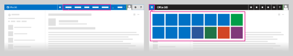
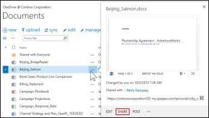
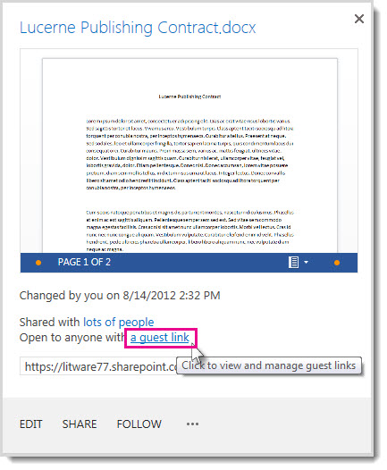
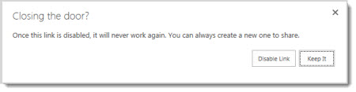

When you share a site with external users, you send them an invitation that they can use to log in to your site. You can send this invitation to any email address. When the recipient accepts the invitation, they log in using either aMicrosoft account or a work or school account. When you share a site, you can select the type of permissions you want that person to have on the site.
You need to be a Site Owner or have full control permissions to share a site with external users.
Sign in to Office 365 with your work or school account.
At the top of the page, select Sites. Or, select the app launcher  , and then select Sites.
, and then select Sites.

Select the ellipses ... next to the document to open its callout window and then select Share.

In the Share dialog box, select Get a link.
Select Create Link for the type of permission you want to grant: view only or edit permissions.
A guest link URL is created.
Select the guest link URL and copy it.

You can now paste the guest link URL into the media of your choice.
If a document is in a team site library, other site members can find the guest links in the Share dialog box and send them to others.
If the file you are attempting to share is located in a library that is using Information Rights Management, you will not be able to share it externally.
Anonymous guest links could potentially be forwarded or shared with other people, who might also be able to view or edit the content without signing in. Avoid using anonymous guest links for sensitive content.
People who are invited to access documents using anonymous guest links will only be able to view or read files in the relevant Office Online. They will not be able to open files in a corresponding desktop version of the Office program.
If external sharing is turned off globally in the Office 365 Service Settings or the SharePoint Online Admin center, any shared links will stop working. If the feature is later reactivated, these links will resume working. It is also possible to disable individual links that have been shared if you want to revoke access to a specific document. See Disable an anonymous guest link.
If you share Excel workbooks that include Power View sheets with people outside your organization, they won't be able to see the Power View sheets in those workbooks.
Allow people to create guest links with documents you’ve shared with them
You may be happy to share some documents widely, and in fact you may want to encourage people to reshare them. For such documents you can allow people to create anonymous guest links with documents you share with them.
To allow this capability, you must have full control permission.
Sign in to Office 365 with your work or school account.
At the top of the page, select Sites. Or, select the app launcher , and then select Sites.
Go to the library where you want to allow people to create guest links.
Select settings > Site settings > Users and Permissions > Site permissions > Access Request Settings.
In the Access Requests Settings dialog box, check Allow members to share the site and individual files and folders.
Now when people select documents you’ve shared with them and open the Share dialog box, they can create a guest link. Note, however, that they can only create guest links that allow guests to edit the document if you gave them edit permission when you first shared the document. If they only have view permission, they can only create guest links that allow view permission.
For an overview of Access Request Settings, see Video: Share a site without access request.
Share a document requiring sign in to your site
You must be a Site Owner or have full control permissions to share a document with external users. Additionally, the external sharing feature must be turned on in either the Office 365 Service Settings or the SharePoint Online admin center (depending on which plan you have). External sharing must also be turned on for your site collection (enterprise plans only).
Sign in to Office 365 with your work or school account.
At the top of the page, select Sites. Or, select the app launcher  , and then select Sites.
, and then select Sites.

Select the ellipses ... next to the document to open its callout window and then select Share.
Make sure Invite people is selected then type the email addresses of people you’re inviting to share the document. For example: someone@outlook.com, or somebody@gmail.com, or externaluser@contoso.com.
In the drop-down list, select the permission level you’d like to grant these users: Can edit or Can view.
If you want, type a message to be included with the email. The message might include information or instructions about the document you’ve shared.
Select the Require sign-in check box.
NOTE If you don’t select the Require sign-in check box, the email will contain an anonymous guest link to the document. Anonymous guest links could potentially be forwarded or shared with other people, who might also be able to view or edit the content without signing in.
Select Share.
See who has access to a specific site or document
You can also use the Share command to quickly see the list of people a document has been shared with.
Do one of the following:
To see who has access to a site, select Share at the top right of the page, and then select the link after Shared with in the Share dialog box to view a list of people who have access to the site.
To see who has access to a document, folder, or Document Set, select the item in the document library, and then flick Shared With on the Files tab.
Revoke user access to a site
If a site has been shared with an external user, and you want to revoke that user’s access to the site, you can do so by removing that individual’s permissions for the site.
Sign in to Office 365 with your work or school account.
At the top of the page, select Sites. Or, select the app launcher  , and then select Sites.
, and then select Sites.

Go to the site on which you want to withdraw an invitation.
Select settings > Site Settings > Users and Permissions > Users and Permissions.
Select the group from which you want to remove users.
Select the users you want to remove, point to Actions > Remove Users from Group.
Select OK.
Disable an anonymous guest link
You can see whether a document has been shared via guest link by checking the properties menu for the document.
Sign in to Office 365 with your work or school account.
At the top of the page, select Sites. Or, select the app launcher , and then select Sites.

Go to the library that contains the document for which you want to remove a guest link.
Point to the document, and select the three ellipses (…).
Select a guest link in the sentence Open to anyone with a guest link. (If you don’t see this link, your document is probably set up to allow only users with a username and password.)

Next to the URL for the guest link, select Disable.
When asked if you want the link disabled, select Disable Link.

When people outside your organization attempt to access the content using the guest link, they will get a message that says they can’t access it.
Manage external sharing for your SharePoint Online environment
If your organization performs work that involves sharing documents or collaborating directly with vendors, clients, or customers, then you might want to use the external sharing features of SharePoint Online to share content with people outside your organization who do not have licenses for your Microsoft Office 365 subscription.
This article describes the external sharing features of SharePoint Online. If you’re looking for other external sharing features in Office 365, see:
Share calendars with external users
Use Lync to connect with external contacts
NOTE The SharePoint Online Public Website information in this article applies only if your organization purchased Office 365 prior to March 9, 2015. If you purchased Office 365 after March 9, 2015, use an Office 365 website hosting partner.
What are the external sharing features of SharePoint Online?
External sharing features include:
The ability to turn external sharing on or off globally for an entire SharePoint Online environment (or tenant). Turning external sharing off at the tenant level means no documents, sites, or site collections can be shared externally.
The ability to turn external sharing on or off for individual site collections. This provides you with the ability to secure content on specific site collections that you do not want to be shared.
The ability to share sites and documents with authenticated users. Authenticated users are those who are invited to sign in by using a Microsoft account or work or school account.
The ability to share documents with guest users. Guest users, also called anonymous users, don’t need aMicrosoft account or work or school account to access documents. They access the document via a guest link that you or your employees give to them.
What is an external user?